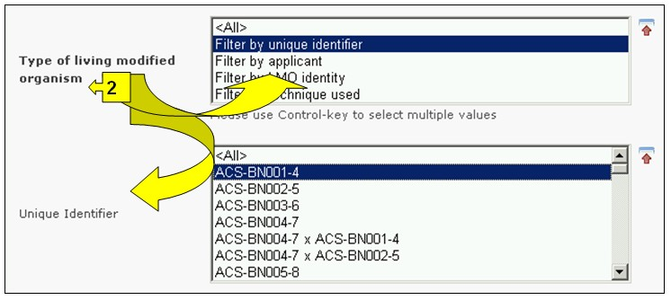
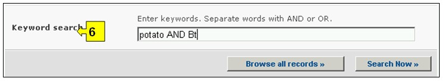

The search interface for information about LMOs, genes and organisms can be accessed from the link in the Finding Information drop down menu on the navigation bar, or from the link in the left-hand menu on the Finding Information page or from the link in the LMOs, genes and organisms text on the same page.
On the Search for LMOs, genes and organisms page the user can search for information in:
-
The LMO-Unique Identifiers Registry (LMO-UIds), which provides summary information about all living modified organisms registered in the BCH including transformation events, genetic modifications, and the unique identification code (if available) for each record. Links to all decisions and risk assessments that refer to these organisms are accessible through tabs provided in each LMO record;
-
The Gene Registry, which provides summary information about gene elements and characteristics of the genetic modifications of LMOs; and
-
The Organism Registry, which provides summary information about parental, recipient or donor organisms related to the LMOs registered in the BCH.
On the Search for LMOs, genes and organisms page there are six search criteria boxes provided for refining searches in this database. Each of them has a drop down menu from which it is possible to select the required criteria. The default setting for each drop down menu is the first item at the top of the menu list. On the right side of each box, a button allows the user to activate multiple selections. Once in the multiple selection mode it is possible to add more criteria to the selection by clicking on the relevant criteria while pressing the Ctrl (Control) key.

There are six search criteria boxes provided for refining searches in this database.
Box 1 [Registries] lists the three registries available: LMO, Gene and Parent or Donor Organism.

Box 2 [Type of living modified organism] allows the user to apply filters for various aspects of an LMO in order to further narrow the search to records that are specifically related to the selected criteria. Filter categories available are the following: (i) LMOs, identified usually by a Unique Identifier (e.g. MONØØ81Ø-6), (ii) Introduced or Modified Traits (e.g. Glyphosate tolerance), (iii) Gene name (e.g. Cry1A(b)), (iv) Technique Used (e.g. Agrobacterium-mediated), (v) Parental organism common name (e.g. Maize), (vi) Parental organism scientific name (e.g. Zea mays) or (vii) Applicant (free text entry, e.g. Monsanto).
Selecting one or more filter criteria from the drop down menu opens additional search boxes with a drop down menu of options, each related to one of the selected filters. Multiple filters can be added by using the Ctrl (Control) key (i.e. by clicking on the relevant filter criteria while pressing the Ctrl key).

Box 3 [Type of gene] allows the user to apply filters for a gene name and/or for a gene trait in order to further narrow the search to records that are specifically related to the selected criteria.
Selecting one or both filter criteria from the drop down menu opens additional search boxes with a drop down menu of options, each related to one of the selected filters. Multiple filters can be added by using the Ctrl (Control) key (i.e. by clicking on the relevant filter criteria while pressing the Ctrl key).

Box 4 [Type of organism] allows the user to apply filters for the common name and/or for the scientific name of organisms in order to further narrow the search to records that are specifically related to the selected criteria.
Selecting one or both filter criteria from the drop down menu opens additional search boxes with a drop down menu of options, each related to one of the selected filters. Multiple filters can be added by using the Ctrl (Control) key (i.e. by clicking on the relevant filter criteria while pressing the Ctrl key).

Box 5 [Date of record] allows the user to narrow the search according to the date records have been registered in the BCH. The drop down menu provides a number of options for limiting the search to only those records submitted within the selected interval of timeframe (e.g. ‘last day’, ‘last month’, ‘last year’, etc.).

Box 6 [Keyword search] provides an opportunity for using keywords to narrow the search. The user can use standard keyword syntax (combination of AND / OR operators) to search with multiple words or core parts of words (e.g. “Import OR Export”). A search that is made by using keywords only produces results of records containing exactly the searched text and not possible synonyms that have not been inserted (i.e. a search with the single keyword “Maize” will produce a list of records containing the word “Maize” but not the words “Corn” or “Zea mays”).

The search page offers three buttons to produce a record list. The Search Now button (both at the top and bottom of the search interface) allows the user to activate a search based on the search criteria selected in the search facility boxes. The search results are sorted alphabetically by default according to country name. The Browse all records (at the bottom of the search interface) allows the user to obtain a list of all records in this database.

The Search Results pages have a sorting facility above the list of records. This can be used to sort the records according to criteria specific for that category of information. Note that the sorting criteria change when the user selects different search criteria.

Example: A user wishes to identify all the canola modifications produced by BASF that improve phytate degradation. The user: (i) selects Filter by Applicant in the Type of LMO box and type BASF in the Applicant box; (ii) then selects Filter by trait in the Type of gene box and Phytate degradation in the Introduced or modified traits box; and (iii) selects the Filter by common name In the Type of organisms box and selects Rapeseed in the Parental organism box.
Activating the Search Now button presents the search results which are displayed as a list of records. Detailed information about each LMO can be viewed by selecting the title of the record.